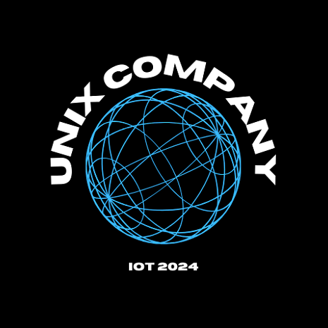
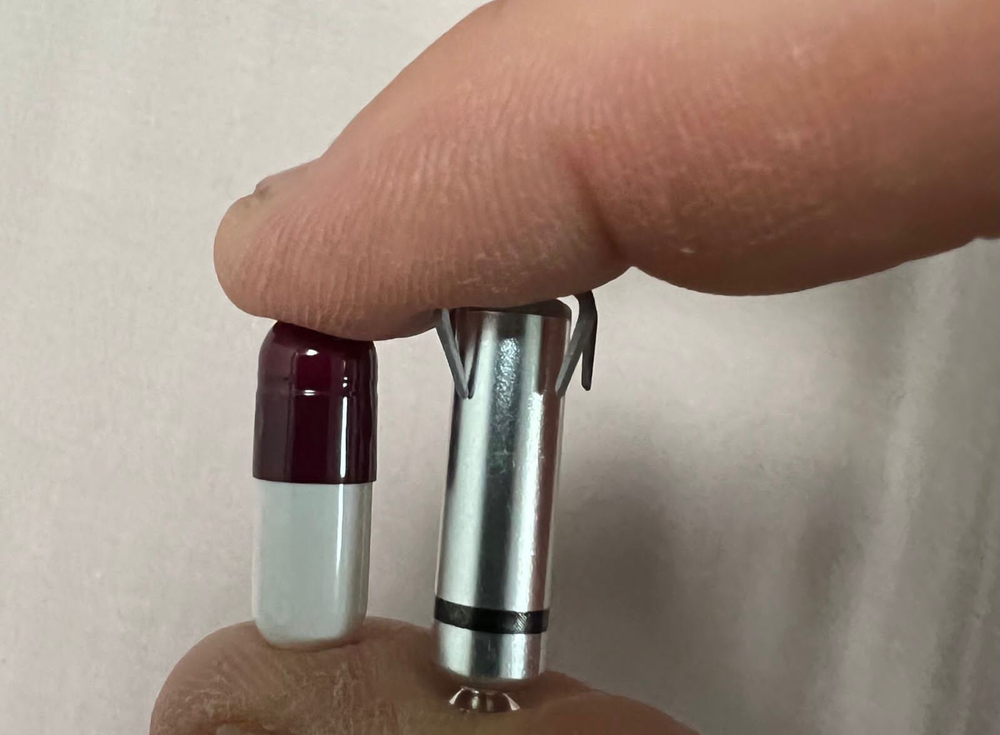
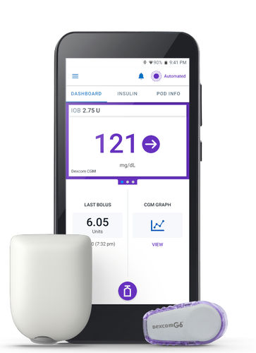
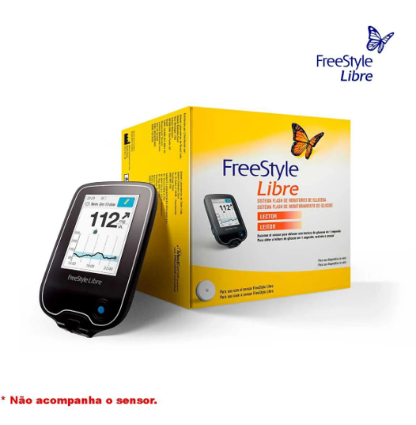

UNIX
Come and discover a bit about the latest technologies!
At Unix, our goal is to transform the daily operations of hospitals, businesses, industries, and stores through the implementation of innovative solutions in Artificial Intelligence (AI) and the Internet of Things (IoT). We believe technology has the power to optimize processes, save time, and improve efficiency across various sectors. Our commitment is to provide tools that automate routine and complex tasks, enabling employees and healthcare professionals to focus on what truly matters: delivering quality service and making strategic decisions. With our solutions, we aim to simplify daily tasks, reduce the burden of manual work, and minimize human errors. For hospitals, our technologies are designed to enhance hospital management, from patient monitoring to resource administration. This results in a more organized and efficient environment, where healthcare professionals can dedicate more time to patient care. In businesses and industries, our AI and IoT solutions help automate production processes, monitor equipment in real time, and predict necessary maintenance. This not only boosts productivity but also ensures a safer and more efficient work environment. At Unix, we are committed to bringing innovation and efficiency to all our partners, helping them achieve their goals with greater speed and precision.Join us on this journey toward a smarter and more automated future.
Environmental Sustainability
Energy Monitoring Systems
Energy Monitoring Systems: These systems use IoT sensors to measure energy consumption in real-time, identifying equipment that consumes the most electricity and providing insights for reducing usage. In addition to lowering energy costs, they help decrease carbon emissions by optimizing the use of energy resources. In Brazil, the BNDES and ANEEL initiative in the "Smart City Búzios" project uses this technology to optimize energy consumption and reduce CO2 emissions.
Waste Management with IoT
Waste Management with IoT: By utilizing sensors to monitor waste levels and collection processes, this system helps companies minimize improper disposal and optimize selective collection. With precise management, it becomes possible to reduce the amount of waste sent to landfills, promoting recycling and composting practices whenever possible. The Brazilian startup GreenPlat has developed a platform that leverages IoT to monitor waste management, fostering sustainability.
Smart Pacemakers

Smart Pacemakers: Devices like those from Medtronic provide real-time monitoring of cardiac activity and transmit data to doctors, enabling adjustments to treatments for arrhythmias and other heart conditions without the need for frequent hospital visits. With remote monitoring capabilities, these devices reduce hospital visits and allow for real-time treatment adjustments, promoting preventive healthcare and optimizing medical resource usage
Omnipod System

Omnipod System: Developed by Insulet, this system continuously monitors glucose levels and administers insulin as needed. It’s an innovative solution for diabetes care, minimizing the need for manual dosage adjustments. This automated insulin delivery system also reduces reliance on disposable syringes and needles, while improving glycemic control. Better glucose management can help lower the risk of hospitalizations and additional treatments for diabetes-related complications.
Smart Prosthetics

Smart Prosthetics: Connected prosthetics, such as those by Össur, use sensors to automatically adjust based on the user’s activity. They enhance mobility and comfort, providing a more natural experience for amputees. By adapting automatically to the user, these prosthetics reduce the need for frequent check-ups and manual adjustments, saving resources. Additionally, they improve the user’s quality of life, potentially reducing reliance on additional treatments.
BIBLIOGRAPHY
Projeto Cidade Inteligente Búzios - BNDES e ANEEL
GreenPlat: Gestão de Resíduos com IoT
https://www.bp.org.br/institucional/noticias/menor-marca-passo-do-mundo-chega-ao-brasil
/https://www.protetics.com.br/sistema-connect-ossur-avancos-em-proteses-inteligentes/
/https://www.medicalexpo.com/pt/prod/insulet/product-83548-520708.html
Who we are
My name is Matheus Fernandes, I’m 21 years old, and I was born in Pouso Alegre. I chose the Systems Analysis and Development (ADS) program because I want to transform my passion for technology and creativity, like design, into something that brings me a fulfilling life with many opportunities. My goal is to create tangible solutions that positively impact my personal, professional, and creative life. I aspire to become a front-end developer and UX designer, combining technical development with user-centered design to create amazing digital experiences.
Hello, my name is Matheus de Campos, I'm 19 years old and I was born in Alfenas, Minas Gerais. I chose the Systems Analysis and Development course because of my passion for creating things along with my passion for technology. I have a goal of getting opportunities to showcase my work and be valued for my demonstrated efforts. I want to become a front-end programmer, because of my desire to always improve digital visuals.
My name is João Victor Freitas Lopes, I'm a technology enthusiast in general. I'm currently studying systems analysis and development. My passion is cybersecurity and programming, to which I dedicate hours of study. I am always seeking content that can contribute to my goals. I am diligent and know how to handle psychological pressures in a healthy way. I work as part of a team in a harmonious and rational manner, always seeking good results!
My name is Matheus Inácio, I’m 23 years old, and I was born in Paraisópolis, MG. I’m passionate about technology and aspire to work in the field of data analysis. I am dedicated, spending significant time learning and growing in my area of interest. I thrive under pressure and handle challenges in a balanced and healthy manner. As a team player, I strive for harmony and logical problem-solving to achieve outstanding results.
My name is Fernandes Araujo, I’m 21 years old, and I aim to build a career in back-end development. Passionate about technology, I dedicate myself to mastering the skills necessary for success in this field. I am hardworking, detail-oriented, and thrive on solving complex problems. As a team player, I collaborate effectively to deliver robust and efficient solutions.